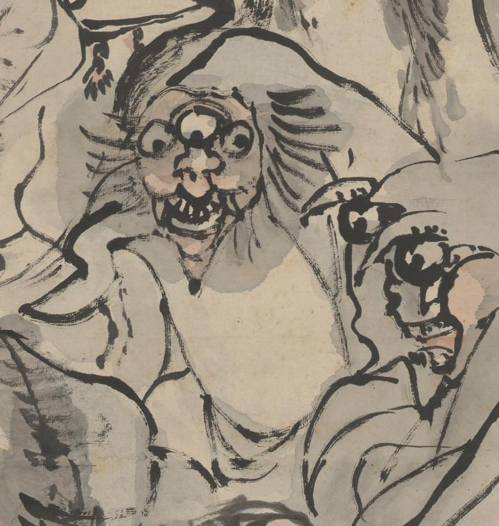

三つ目の化物。頭から背中にかけて頭巾のようなものをかぶっている。獣のような顔をしている。額の真ん中に大きな3つ目の目がつき、鼻は横につぶれている。開いた口の上顎に大きな歯が並んでいる。
著作者：高井鴻山／出典：親書誌：U426_nichibunken_0099：群妖図；グンヨウズ／日付：2006／資源識別子：U426_nichibunken_0099_0010_0000
Copyright (c)2010- International Research Center for Japanese Studies, Kyoto, Japan. All rights reserved.